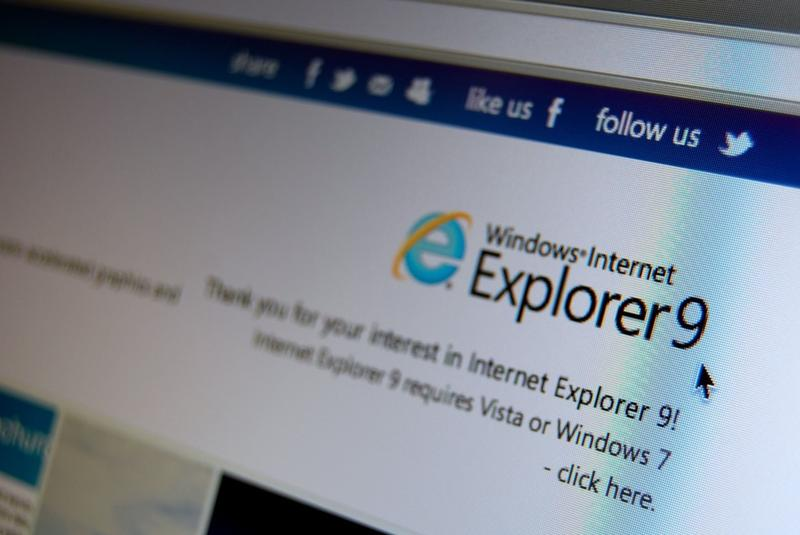
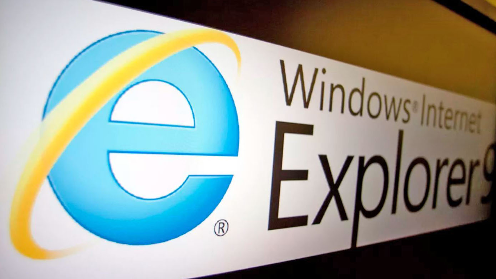

 Deși a lansat două versiuni Edge în rolul de succesor și înlocuitor Microsoft nu a luat cu adevărat „atitudine” împotriva lui Internet Explorer, până acum.! La fel ca plugin-ul Adobe Flash, Internet Explorer este unul dintre dinozaurii internetului care pur și simplu refuză să moară, web browser-ul lansat în urmă cu peste 25 de ani apărând preinstalat chiar și cu cel mai recent build Windows 10.
Potrivit Microsoft, singurul motiv pentru care Internet Explorer a fost păstrat atât de mult timp este nevoia clienților business de a păstra compatibilitatea cu infrastructura IT existentă. Echivalentul lui Windows XP în era Windows 10, Internet Explorer de regulă nu ajungi să-l folosești pentru că PC-ul tău nu ar putea rula web browser mai nou, ci pentru că alte elemente din infrastructura
IT a organizației tale solicită asta în mod expres.
 Din păcate, răgazul lăsat de Microsoft pentru companiile care au tot amânat modernizarea sofware-ului folosit este pe cale să expire, Internet Explorer urmând să dispară, sau în orice caz, să nu mai funcționeze cu versiunea comercială de Windows 10, începând cu 15 iunie 2022.
La fel ca în cazul Windows XP, companiile care țin morțiș să păstreze infrastructura software dezvoltată în urmă cu mulți ani ar putea opta pentru Long-Term Servicing Channel (LTSC), un serviciu care asigură suport extins pentru produsele Microsoft altfel nesuportate în mod oficiale, desigur, contracost.